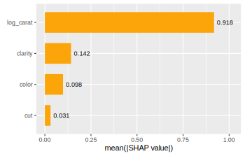
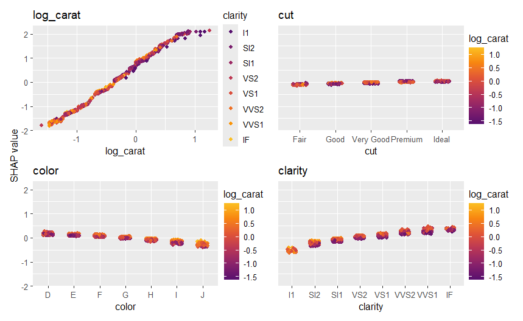

Overview
{shapviz} provides typical SHAP plots:
-
sv_importance(): Importance plots (bar plots and/or beeswarm plots). -
sv_dependence()andsv_dependence2D(): Dependence plots to study feature effects and interactions. -
sv_interaction(): Interaction plots. -
sv_waterfall(): Waterfall plots to study single predictions. -
sv_force(): Force plots as alternative to waterfall plots.
SHAP and feature values are stored in a “shapviz” object that is built from:
- Models that know how to calculate SHAP values: XGBoost, LightGBM, h2o, or
- SHAP crunchers like {fastshap}, {kernelshap}, {treeshap}, {fastr}, {DALEX}, or simply from a
- SHAP matrix and its corresponding feature values.
Installation
# From CRAN
install.packages("shapviz")
# Or the newest version from GitHub:
# install.packages("devtools")
devtools::install_github("ModelOriented/shapviz")Usage
Shiny diamonds… let’s use XGBoost to model their prices by the four “C” variables:
library(shapviz)
library(ggplot2)
library(xgboost)
set.seed(1)
# Build model
x <- c("carat", "cut", "color", "clarity")
dtrain <- xgb.DMatrix(data.matrix(diamonds[x]), label = diamonds$price)
fit <- xgb.train(params = list(learning_rate = 0.1), data = dtrain, nrounds = 65)
# SHAP analysis: X can even contain factors
dia_2000 <- diamonds[sample(nrow(diamonds), 2000), x]
shp <- shapviz(fit, X_pred = data.matrix(dia_2000), X = dia_2000)
sv_importance(shp, show_numbers = TRUE)
sv_dependence(shp, v = x)

Decompositions of individual predictions can be visualized as waterfall or force plot:
sv_waterfall(shp, row_id = 1)
sv_force(shp, row_id = 1)